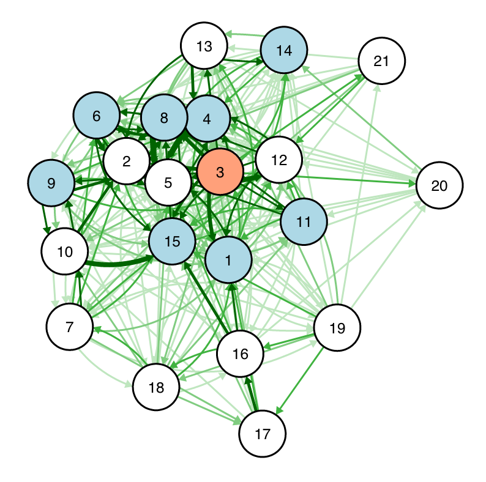

Introduction#
Networks: A set of objects (nodes) with interconnections (edges).
Why study networks? Because they are everywhere!
Networks provide a powerful way to think about a variety of phenomena:
On a gigantic scale, galaxies are mapped as a network held together by gravity.
On a smaller but still massive scale, countries form networks of all sorts – based on trade, migration, flights, etc.
At the human level, which is most familiar to us, we map social networks to study social ties, positions, power, information flows, etc.
At a microscopic level, brain activities are widely studied by looking at complex networks of brain cells and neurons.

Network Analysis in General#
Network analysis can be applied to anything that can be seen as connections between nodes.
While social networks are most popular, network analysis is not limited to analyzing social relations.
In digital learning environments, network analysis can be used to examine student interaction networks in digital spaces (e.g., online forums), following relationships on social media, the spread of ideas in a community, etc.
Basic Concepts#
In a network,
There are things, referred to as nodes or vertices
Nodes have connections to other nodes, referred to as ties, edges, or links
Nodes can have different attributes
Links can have different attributes that define their types or strengths
For example, here is a network of members of a class interacting with each other.

In this network,
Each node represents a person
Each edge (directed) represents interactions from one person to another
Nodes have different attributes, including identity (being the instructor) and participation level (e.g., being on time)
Each link has a weight that measures the number of interactions
Beyond this example, in a network of classroom interactions, there could be several different types of nodes:
Teacher
TA
Student
Project Leader
Within the network, there could also be several types of links:
Collaborative relationship
Sharing access to the same learning resource
Help-seeking
Insult
As shown in these examples, links can be directed or undirected.
Within the network, links could be stronger or weaker due to
Intensity of relationship
Frequency of act
Timing of act
What we can do with such a network?#
Studying the structure of a network allows us to answer questions about complex phenomena.
We will explore different network techniques to study the structure of networks, with a focus on social networks.
Social Networks#
Social networks are commonly known. Social networks can be about
Friendship in a karate club
Email communication among employees of a large company
Co-authorship among researchers in a field
In education, many types of social networks have been examined, ranging from advice-seeking networks in schools, friendship networks in the classroom, interaction networks in MOOC discussion forums, among others.